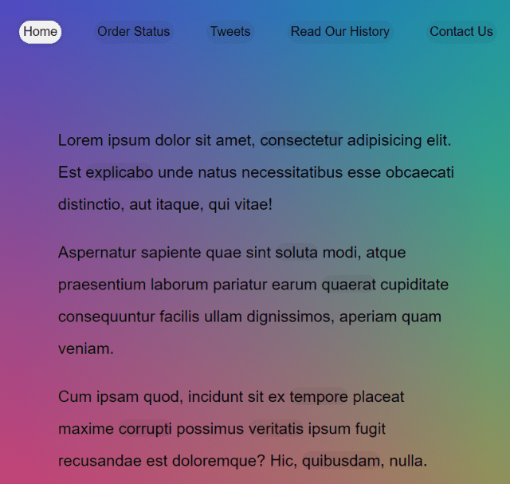

22 — Follow Along Link Highlighter 
主題 透過getBoundingClientRect與CSS的transform來達到HightLight樣式會跟著指定位置移動的效果。
Follow Along Link Highlighter
Github
步驟 Step1. 取得頁面元素 1 2 3 4 5 6 7 // 取得HTML中所有的a元素 const triggers = document.querySelectorAll('a'); // 建立一個span來放置highlight效果 const highlight = document.createElement('span'); highlight.classList.add('highlight'); // 將建立的span加到頁面中 document.body.append(highlight);
Step2. 撰寫移入狀態 用以下的JS對目標(a連結)定位並設定樣式
1 2 3 4 5 6 7 8 9 10 11 12 13 14 15 16 17 18 // 效果 function highlightLink() { // 取得this(由a.addEventListener傳入，所以會是該a)的資訊 const linkCoords = this.getBoundingClientRect(); // 建立一個coords物件來存放會使用的寬高與定位資訊 const cords = { width: linkCoords.width, height: linkCoords.height, left: linkCoords.left + window.scrollX, top: linkCoords.top + window.scrollY } // 設定highlight效果的寬高及定位 highlight.style.width = `${cords.width}px`; highlight.style.height = `${cords.height}px`; highlight.style.transform = `translate(${cords.left}px, ${cords.top}px`; } // 監聽所有a元素的滑鼠移入，觸發highlightLink triggers.forEach(a => a.addEventListener('mouseenter', highlightLink));
位移的效果主要來自已經寫好的css與js裡面重新定位的translate
1 2 3 4 5 6 7 8 9 10 11 12 .highlight { transition: all 0.2s; border-bottom:2px solid white; position: absolute; top:0; background:white; left:0; z-index: -1; border-radius:20px; display: block; box-shadow: 0 0 10px rgba(0,0,0,0.2) }
語法&備註 ParentNode( 父節點 ) 1 2 3 4 5 6 7 8 <p> <a class="test"></a> <a class="test2"></a> </p> let b = document.getElementById('test').parentNode console.log(b) //<p><a class="test"></a><a class="test2"></a> let c = document.getElementById('test').parentNode.nodeName console.log(c) //p
ParentNode.append() && ParentNode.appendChild() 1 2 3 4 // 創建一個新的段落p，然後加到body最後面 let p = document.createElement('p') document.body.appendChild(p) //包含在body之內
差異：
ParentNode.append()允許追加 DOMString 對象，而 Node.appendChild() 只接受 Node 對象
ParentNode.append()没有返回值，而 Node.appendChild() 返回追加的 Node 對象。
ParentNode.append()可以追加幾個節點和字符串，而 Node.appendChild() 只能追加一個節點。
MDN-ParentNode
MDN-ParentNode.append
MDN-appendChild
Element.getBoundingClientRect() 返回目標元素的大小與相對於瀏覽器視窗的位置資訊
MDN-Element.getBoundingClientRect